Galerie photographique
Photo Gallery
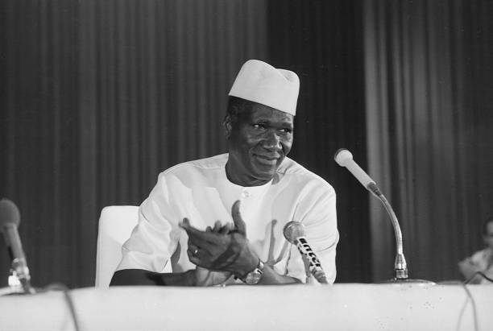
Conférence de presse — sourire et assurance
Press conference — confidence and ease
c. 1970
© Getty Images
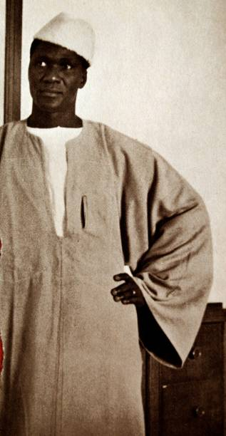
Portrait officiel en boubou
Official portrait in boubou
c. 1960
© Getty Images
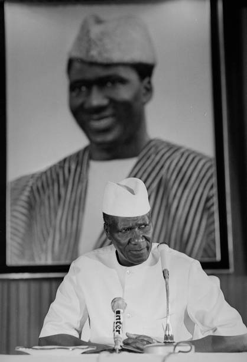
Portrait debout — Conakry
Standing portrait — Conakry
c. 1962
© Getty Images
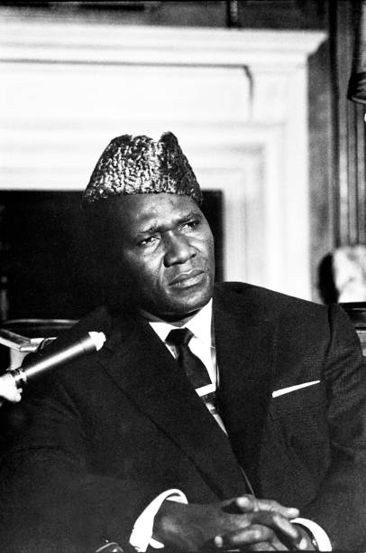
Portrait au micro — regard intense
Portrait at the microphone — intense gaze
c. 1959
© Getty Images
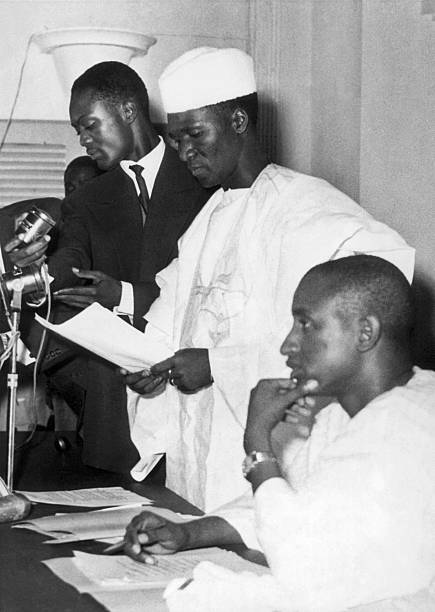
Proclamation de l'indépendance — 4 octobre 1958
Proclamation of independence — October 4, 1958
1958
© Getty Images
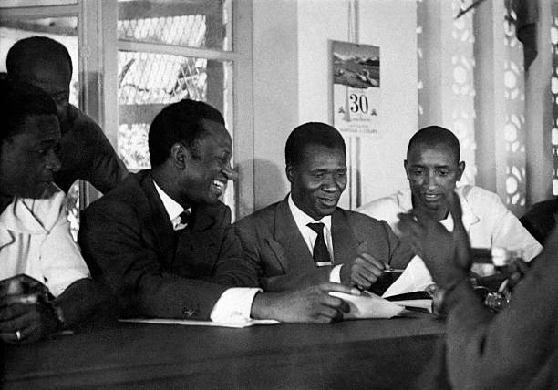
Réunion gouvernementale — premières semaines de l'indépendance
Government meeting — first weeks of independence
Février 1959
© Getty Images
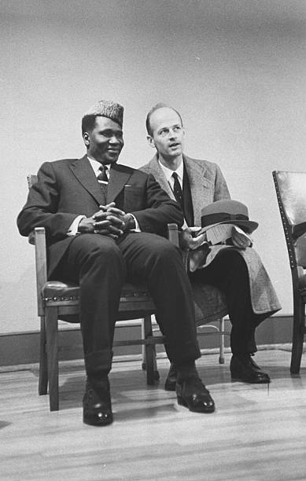
Portrait jeune en conversation — années 1950
Young portrait in conversation — 1950s
c. 1958
© Getty Images
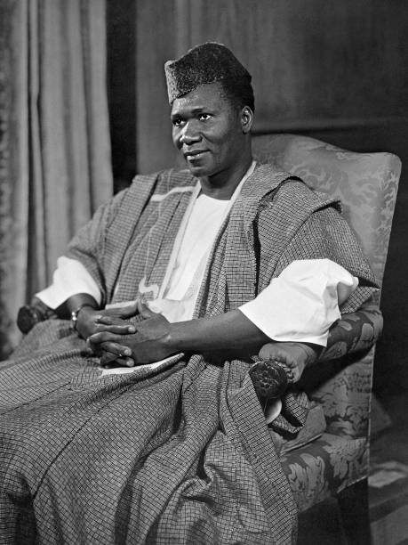
Portrait officiel — debut de présidence
Official portrait — early presidency
c. 1959
© Getty Images

Visite aux États-Unis
Visit to the United States
1959
© Getty Images
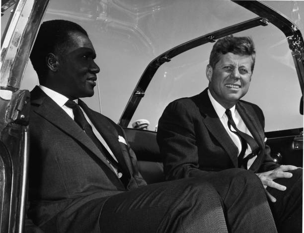
Dans la Lincoln de Kennedy — Washington
In Kennedy's Lincoln — Washington
1962
© Getty Images
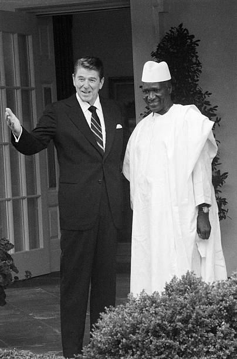
Avec le Président Reagan — Maison Blanche
With President Reagan — White House
1982
© Getty Images
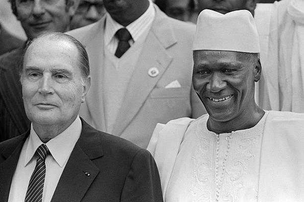
Avec François Mitterrand — réconciliation franco-guinéenne
With François Mitterrand — Franco-Guinean reconciliation
1982
© Getty Images
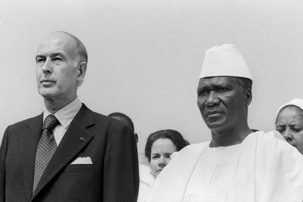
Avec Valéry Giscard d'Estaing — visite officielle
With Valéry Giscard d'Estaing — official visit
1978
© Getty Images
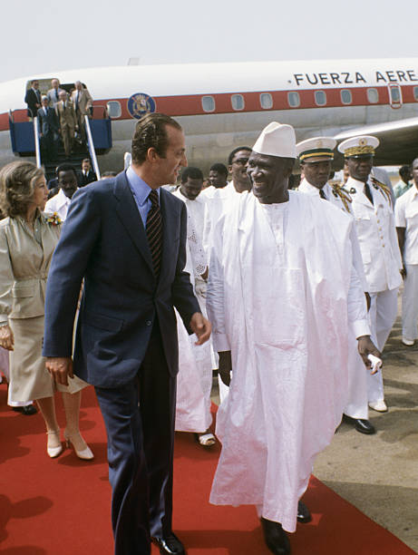
Accueil du Roi Juan Carlos d'Espagne à Conakry
Welcoming King Juan Carlos of Spain in Conakry
1979
© Getty Images
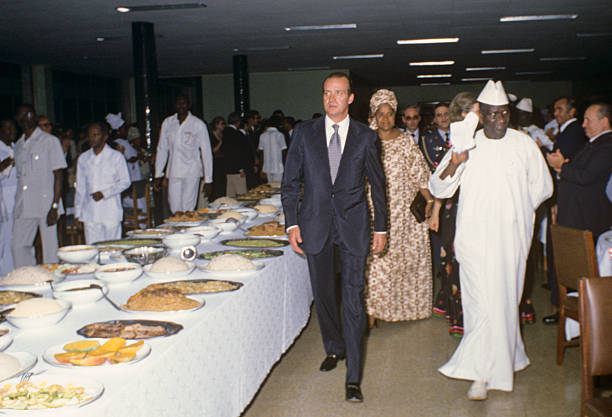
Dîner de gala avec le Roi Juan Carlos et la Reine Sofia
State dinner with King Juan Carlos and Queen Sofia
1979
© Getty Images
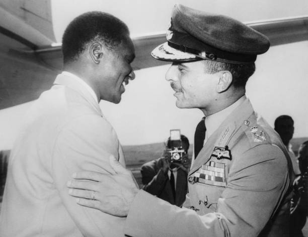
Avec le Roi Hussein de Jordanie — Amman
With King Hussein of Jordan — Amman
1964
© Getty Images
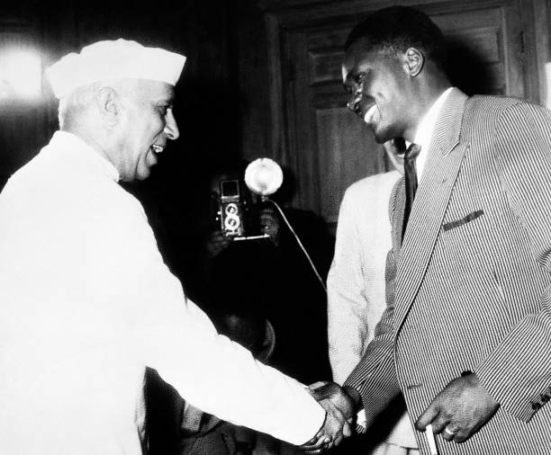
Avec Jawaharlal Nehru — Premier ministre de l'Inde
With Jawaharlal Nehru — Prime Minister of India
1959
© Getty Images
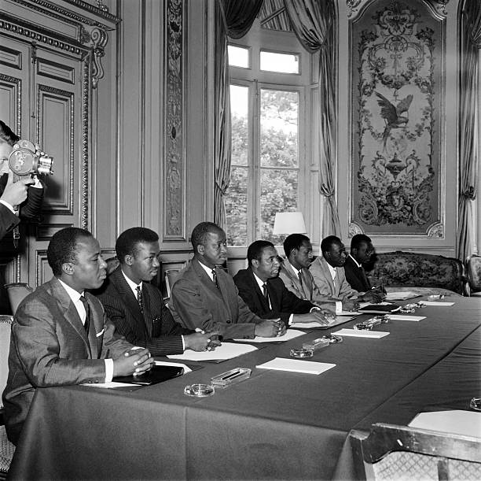
Délégation guinéenne en réunion officielle — Paris
Guinean delegation at official meeting — Paris
1958
© Getty Images
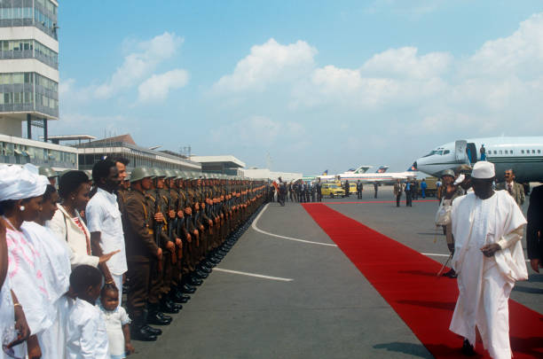
Revue des troupes sur tapis rouge — Conakry
Troop review on red carpet — Conakry
c. 1979
© Getty Images
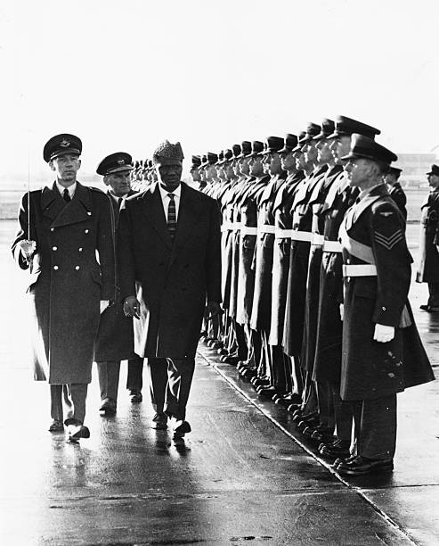
Revue de la Garde d'Honneur — Aéroport de Londres
Inspecting the Guard of Honour — London Airport
Novembre 1959
© Getty Images
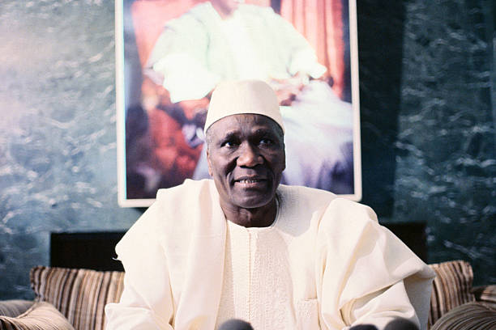
À l'Ambassade de Guinée à Washington
At the Guinean Embassy in Washington
c. 1959
© Getty Images
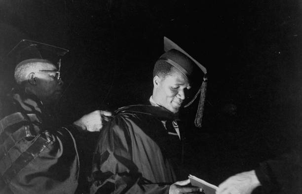
Serrant la main d'un enfant — visite aux États-Unis
Shaking hands with a child — visit to the United States
1959
© Getty Images
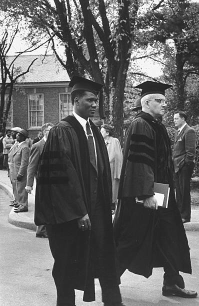
Réception d'un diplôme honorifique — North Carolina College
Receiving honorary degree — North Carolina College
1959
© Getty Images
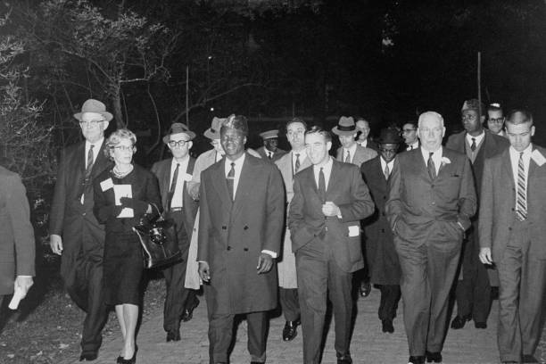
Arrivée nocturne aux États-Unis
Night arrival in the United States
1959
© Getty Images
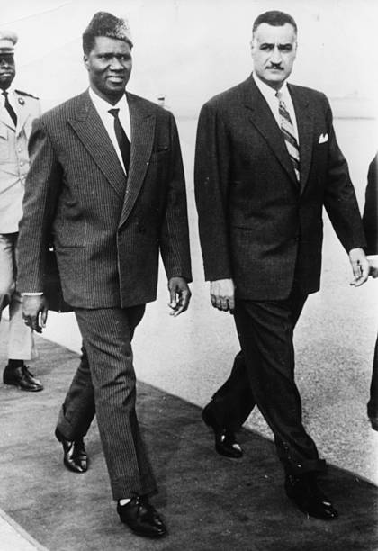
Avec Gamal Abdel Nasser — Caire
With Gamal Abdel Nasser — Cairo
c. 1965
© Getty Images
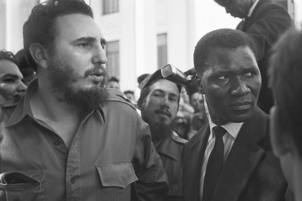
Avec Fidel Castro — Université de La Havane
With Fidel Castro — University of Havana
c. 1960
© Getty Images
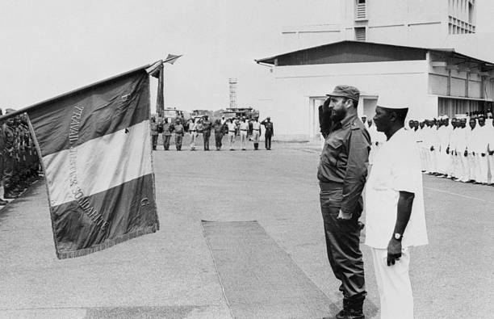
Avec Fidel Castro — revue militaire à Conakry
With Fidel Castro — military review in Conakry
c. 1972
© Getty Images
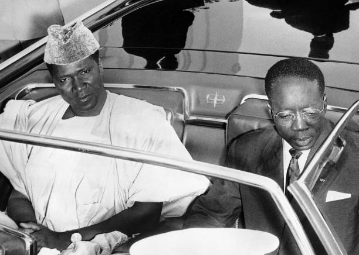
Avec Léopold Sédar Senghor — visite au Sénégal
With Léopold Sédar Senghor — visit to Senegal
Mai 1963
© Getty Images

Signature d'un accord panafricain
Signing a pan-African agreement
c. 1963
© Getty Images
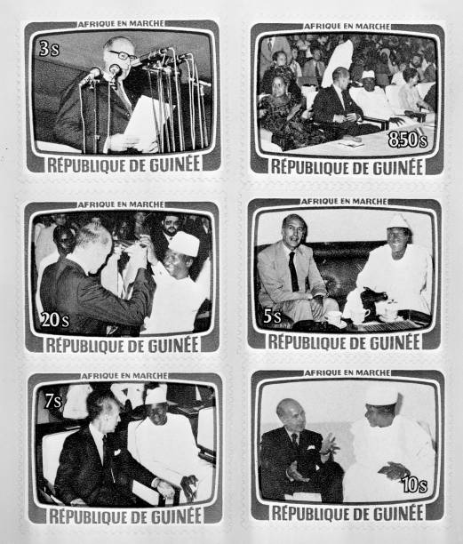
Timbres « Afrique en Marche » — République de Guinée
Stamps "Africa on the March" — Republic of Guinea
c. 1965
© Getty Images
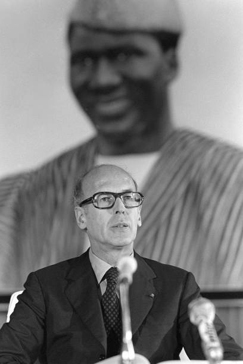
Giscard d'Estaing devant le portrait de Sékou Touré
Giscard d'Estaing before Sékou Touré's portrait
1978
© Getty Images
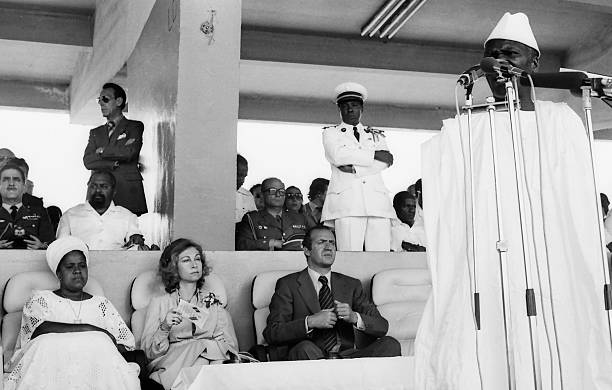
Discours devant les Rois d'Espagne — tribune présidentielle, Conakry
Speech before the Spanish Royals — presidential tribune, Conakry
1979
© Getty Images
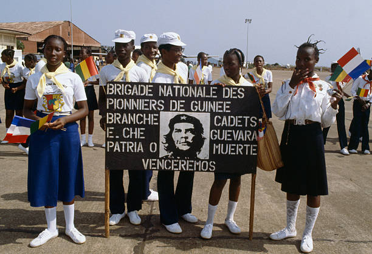
Brigade nationale des Pionniers de Guinée — Branche Cadets Guevara
National Brigade of Pioneers of Guinea — Guevara Cadets
c. 1980
© Getty Images
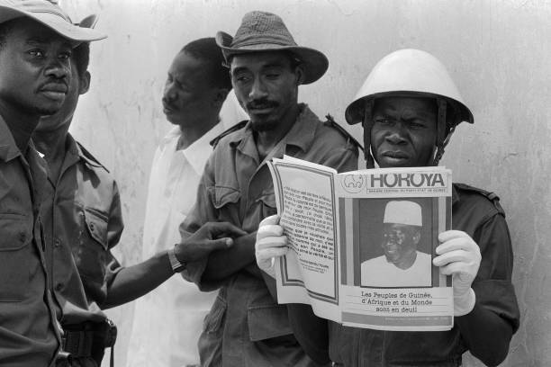
Soldats lisant Horoya — annonce du décès du Président
Soldiers reading Horoya — announcement of the President's death
Mars 1984
© Getty Images
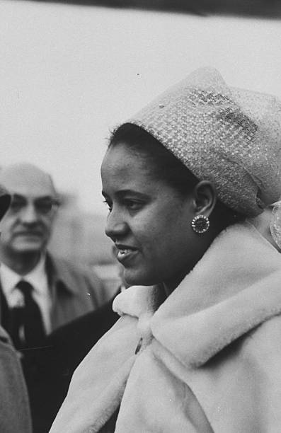
Hadja Andrée Touré — Première Dame de Guinée
Hadja Andrée Touré — First Lady of Guinea
1959
© Getty Images
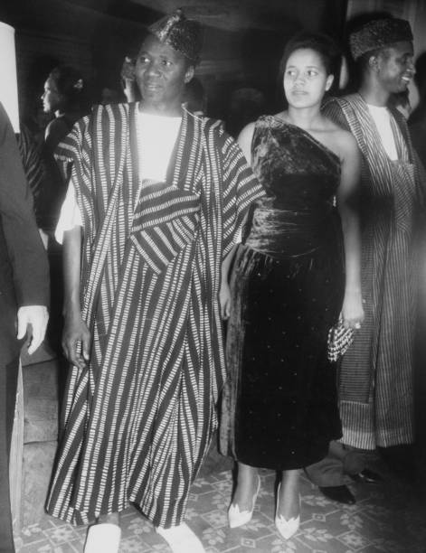
Ahmed Sékou Touré et Andrée Touré en visite officielle
Ahmed Sékou Touré and Andrée Touré on official visit
c. 1960
© Getty Images
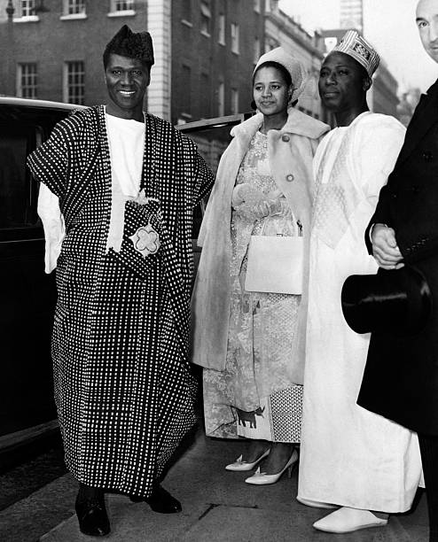
Sékou Touré avec Andrée — sortie à Londres
Sékou Touré with Andrée — outing in London
Novembre 1959
© Getty Images
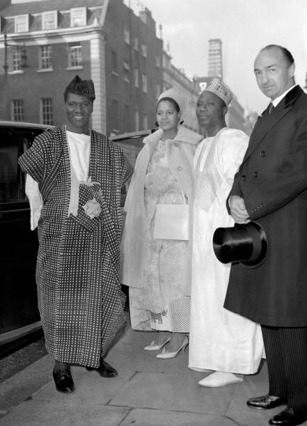
Quittant le Claridge's Hotel — Londres
Leaving Claridge's Hotel — London
Novembre 1959
© Getty Images
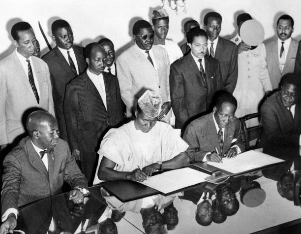
Sékou Touré et Andrée Touré lors d'un gala officiel
Sékou Touré and Andrée Touré at an official gala
c. 1960
© Getty Images
Photographies issues des archives Getty Images et de Wikimedia Commons. Utilisées à des fins documentaires et éducatives. La galerie s'enrichira des archives privées de la famille.
Photographs from Getty Images and Wikimedia Commons. Used for documentary and educational purposes. The gallery will be enriched with private family archives.